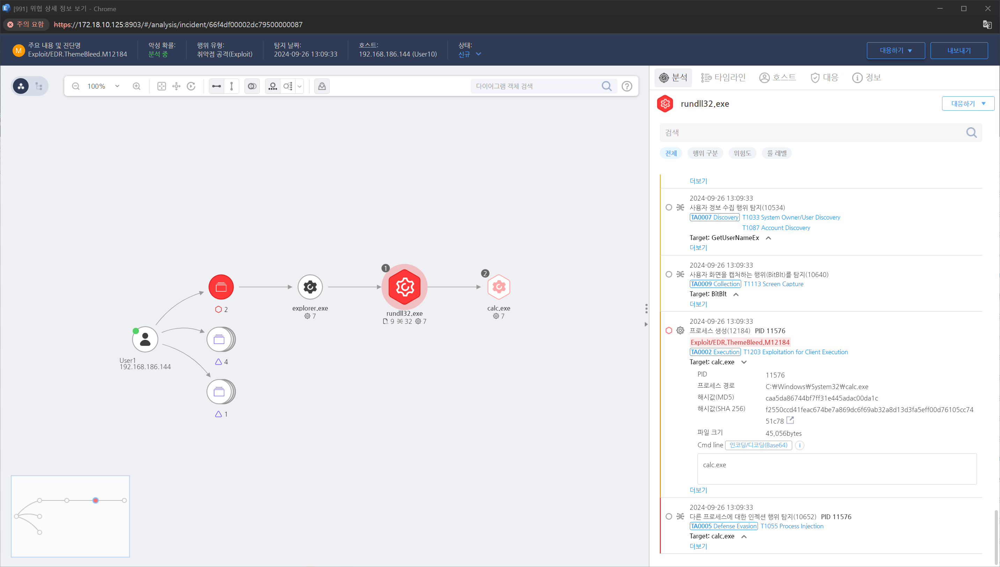

T1203.000.01 Windows 11 RCE: Theme Bleed
D3FEND
MITRE ATT&CK 액션을 기준으로 대응 방안을 작성
Detection
알려진 취약점에 대한 행위를 탐지합니다.
Detection(EDR)

Response
- 로그 분석:
시스템에서 악성 코드 실행과 관련된 로그(브라우저 로그, 이메일 클라이언트 로그 등)를 분석하여 취약점 악용의 흔적을 찾습니다. /var/log 디렉토리 또는 journalctl을 사용해 이벤트 로그를 검토합니다.
- 파일 무결성 검사:
악성 코드가 실행된 시스템에서 파일 무결성 검사를 수행하여 비정상적인 파일 변경 사항을 감지하고, 이를 기반으로 취약점 악용 시도를 파악합니다.
- 악성 파일 조사:
악성 파일이 다운로드되거나 실행된 위치를 조사하고, 해당 파일의 해시 값을 분석하여 악성 코드인지 확인합니다. YARA 규칙을 통해 악성 파일을 식별하고 분석할 수 있습니다.
- 메모리 덤프 분석:
메모리 덤프를 수집하고 분석하여 악성 코드가 실행된 후 메모리에 남아 있는 흔적을 추적합니다. volatility와 같은 도구를 사용하여 악성 코드가 메모리 상에서 어떤 활동을 했는지 분석할 수 있습니다.
- 네트워크 트래픽 분석:
취약점 악용 후 네트워크 트래픽을 분석하여 공격자가 외부 서버와 통신했는지 확인합니다. Wireshark나 TCPDump 같은 도구를 사용해 의심스러운 네트워크 활동을 조사합니다.
- C2 서버 통신 차단:
취약점 악용 후 외부 제어(C2) 서버와의 통신이 발견되면, 방화벽 및 네트워크 모니터링 시스템을 사용하여 해당 서버와의 통신을 즉시 차단합니다.
- 시스템 격리:
취약점이 악용된 것으로 확인된 시스템은 네트워크에서 격리하여 추가적인 공격 확산을 방지합니다. 이 과정에서 시스템 백업을 확보하고, 침해된 파일 및 설정을 복구합니다.
- 취약점 패치 및 보안 업데이트:
취약점이 악용된 시스템에 즉시 관련 패치를 적용하고, 추가적인 취약점이 있는지 검토합니다.
- 안티바이러스 소프트웨어 업데이트:
최신 악성 코드 정의를 포함하는 안티바이러스 소프트웨어를 업데이트하고, 재탐지를 통해 시스템에 남아 있는 악성 코드를 제거합니다.
- SIEM 규칙 강화:
SIEM 시스템의 탐지 규칙을 강화하여 향후 유사한 취약점 악용 시도가 발생할 경우 빠르게 탐지하고 대응할 수 있도록 로그 및 이벤트 모니터링을 향상시킵니다.
Mitigations
정기적인 패치 관리
- 운영체제, 소프트웨어, 애플리케이션에 대해 최신 보안 패치 및 업데이트를 정기적으로 적용합니다.
- 특히, 클라이언트 소프트웨어(예: 브라우저, 이메일 클라이언트)와 관련된 취약점은 빠르게 패치가 적용되어야 합니다.
자동 업데이트 활성화
- 가능한 경우 소프트웨어의 자동 업데이트 기능을 활성화하여 새로운 취약점이 발생했을 때 신속하게 대응할 수 있도록 합니다.
허용된 소프트웨어만 실행
- 허용 목록 기반 실행 제어(Application Control)를 통해 승인된 소프트웨어와 애플리케이션만 클라이언트 시스템에서 실행되도록 설정합니다.
- 이 방법은 악성 소프트웨어가 취약점을 악용하는 것을 제한할 수 있습니다.
제한된 실행 권한
- 관리자가 승인한 프로그램만 실행되도록 하고, 사용자에게는 임의 소프트웨어 설치 또는 실행 권한을 부여하지 않음으로써 취약점 악용을 방지합니다.
보안 설정 강화
- 웹 브라우저와 이메일 클라이언트에 대한 보안 설정을 강화합니다.
- 예를 들어, 스크립팅 기능을 제한하거나 파일 다운로드 및 실행 정책을 설정합니다.
플러그인 관리
- 사용하지 않는 브라우저 플러그인 및 확장 기능을 비활성화하거나 제거하고, 보안 업데이트가 지원되지 않는 플러그인은 사용하지 않도록 권고합니다.
차세대 안티바이러스(NGAV)
- 최신 악성 코드 및 취약점 공격 패턴을 탐지할 수 있는 차세대 안티바이러스(NGAV) 소프트웨어를 설치하여 악성 코드 실행을 방지합니다.
침입 방지 시스템(IPS)
- 네트워크 기반 침입 방지 시스템(IPS)을 사용하여 네트워크 트래픽에서 취약점을 악용하려는 시도를 탐지하고 차단할 수 있도록 설정합니다.
소셜 엔지니어링 방지 교육
- 사용자가 악성 링크나 첨부파일을 통해 악성 코드를 실행하지 않도록 보안 인식을 높이는 교육을 정기적으로 실시합니다.
- 취약점 악용은 종종 사용자의 부주의를 통해 이루어지기 때문에 이를 방지하는 것이 중요합니다.
이메일 및 웹 필터링
- 이메일 첨부파일이나 웹사이트에서 자동 실행되는 악성 파일을 탐지하고 차단하는 필터링 솔루션을 도입하여 잠재적 악성 파일 실행을 사전에 차단합니다.
권한 최소화
- 클라이언트 소프트웨어는 최소 권한 원칙(Least Privilege)을 적용하여 실행되도록 설정합니다.
- 이를 통해 취약점이 악용되더라도 공격자가 시스템에 미치는 영향을 최소화할 수 있습니다.
격리된 환경에서 실행
- 클라이언트 소프트웨어가 가상화된 환경 또는 샌드박스 내에서 실행되도록 하여 취약점 악용 시 시스템에 대한 영향을 최소화합니다.
Affected Techniques
Action 실행시 함꼐 영향을 받는 다른 Techniqes
| D3FEND |
| D3-SU Software Update |
| D3-SCP System Configuration Permissions |
| D3-PH Platform Hardening |